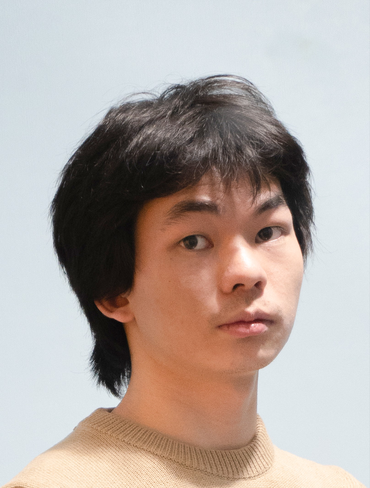

|  | Xin ZENG
Ph.D. Student |
Very motivated in the field of genomics, epigenomics, and transcriptomics.
Highly knowledgeable in molecular biology and machine learning.
Strongly experienced in leveraging computational methods for diverse genomics projects.
Programming skills: Proficient in Python and R, with additional expertise in bash for workflow automation.
Ph.D., University of Tokyo, 2018 - Apr. 2024
Supervisor: Prof. Kenta NAKAI
Department of Computational Biology and Medical Sciences
B.S., China Agricultural University, Sep. 2014 - Jul. 2018
Advisor: Prof. Ziding ZHANG
College of Biological Science
Visiting Scholar under Dr. Stefania GIACOMELLO the SciLifeLab (Sweden), Oct. 12th, 2022 - Oct. 21st, 2022
Studied deep learning in spatial transcriptomics for enhanced resolution.
Skills Acquired: Deep learning methods for integrating count matrix and image information from spatial transcriptomics.
Interned under Dr. Yad GHAVI-HELM at ENS Lyon (France), Sep. 2019 - Dec. 2019
Studied enhancer-promoter interactions using Drosophila as a model system.
Skills Acquired: Familiarity with integrating single-cell RNA-seq and single-cell ATAC-seq data for basic downstream analyses.
SPRING-GX fellowship, University of Tokyo (Grant Number: JPMJSP2108), Sep. 2021 - Apr. 2024
DSTEP, University of Tokyo, Apr. 2021 - Apr. 2024
Comparative Gene Regulatory Network Analysis in Vertebrate Retinal Cell by Single-cell RNA-seq Data
X. Zeng, F. Gyoja, T. G. Kusakabe, K. Nakai. Informatics In Biology, Medicine and Pharmacology (IIBMP 2023) 07-09 September 2023, Kashiwa, Japan
SignedS2V: structural embedding method for signed networks
S. Liu, F. Toriumi, X. Zeng, M. Nishiguchi, K. Nakai. The 11th International Conference on Complex Networks and their Applications 08-10 November 2022, Palermo, Italy
Computational Inference of Gene Regulatory Network in the ascidian brain by single cell RNA-seq data
X. Zeng, F. Gyoja, T. Kusakabe, K. Nakai. The 11th International Tunicate Meeting 11-15 July 2022, Kobe, Japan
Characterizing promoter and enhancer sequences by a deep learning method
X. Zeng, SJ. Park, and K. Nakai. The 19th International Conference on Bioinformatics 25-29 November 2020, World Wide Web
LONRF2 is a protein quality control ubiquitin ligase whose deficiency causes late-onset neurological deficits
D. Li, Y. Johmura, S. Morimoto, M. Doi, K. Nakanishi, M. Ozawa, Y. Tsunekawa, A. Inoue-Yamauchi, H. Naruse, T. Matsukawa, Y. Takeshita, N. Suzuki, M. Aoki, A. Nishiyama, X. Zeng, C. Konishi, N. Suzuki, A. Nishiyama, A. S. Harris, M. Morita, K. Yamaguchi, Y. Furukawa, K. Nakai, S. Tsuji, S. Yamazaki, Y. Yamanashi, S. Shimada, T. Okada, H. Okano, T. Toda & M. Nakanishi. Nature Aging (2023)
SignedS2V: Structural Embedding Method for Signed Networks
S. Liu, F. Toriumi, X. Zeng, M. Nishiguchi, K. Nakai. Complex Networks and Their Applications XI 1, 337-349 (2023)
iDNA-ABF: multi-scale deep biological language learning model for the interpretable prediction of DNA methylations
J. Jin, Y. Yu, R. Wang, X. Zeng, C. Pang, Y. Jiang, Z. Li, Y. Dai, R. Su, Q. Zou, K. Nakai, and L. Wei. Genome Biology 23, 219 (2022)
Characterizing promoter and enhancer sequences by a deep learning method
X. Zeng, SJ. Park, and K. Nakai. Fronters in Genetics 12, 681259 (2021)
Stargazing: Love navigating the sky by eyes and telescopes without GOTO system.
Badminton: Favorite sport for reducing stress.